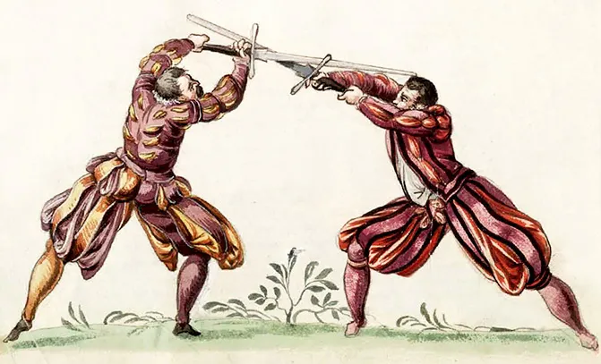

Le Moyen Âge est la période de l'histoire européenne qui s'étend de la fin de l'Empire romain (au ve siècle) au début de la Renaissance (à la fin du xve siècle). On le délimite souvent par la découverte de l'Amérique par Christophe Colomb en 1492, même si, traditionnellement, les historiens préfèrent la date de 1453 (chute de Constantinople et fin de la Guerre de Cent Ans) pour la fin du Moyen Âge.
Les historiens distinguent généralement deux périodes :
le Haut Moyen Âge, du ve siècle au xiie siècle,
le Bas Moyen Âge ou Moyen Âge tardif, du xiiie siècle au xve siècle.
Au ixe siècle, les invasions des Vikings désorganisent la société. Le pouvoir royal, trop affaibli, ne peut pas protéger correctement les populations. Celles-ci se mettent alors sous la protection d'un seigneur. En échange, elles travaillent pour lui, lui payent des impôts et lui donnent une partie de leurs récoltes. Se met alors en place une société hiérarchisée entre les possesseurs de la terre (alors l'essentiel de la richesse) et ceux qui la travaillent. Les hommes sont liés entre eux par des liens de fidélité consentis plus ou moins librement. À partir du xie siècle, le développement des villes permet à un nouveau groupe (les bourgeois artisans et commerçants et personnels judiciaires et administratifs) de prendre de l'importance mais, parallèlement, les ouvriers de l'artisanat deviennent plus nombreux.
La société est chrétienne, et est organisée en Europe occidentale par l'Église catholique, tandis qu'en Europe orientale, après le schisme de 1054, ce sont les églises orthodoxes qui encadrent la population. En Europe occidentale, la papauté tente d'imposer sa suprématie sur les souverains qui résistent. La chrétienté affronte également l'Islam, aussi bien au Proche-Orient avec les Croisades, que dans la péninsule ibérique avec la Reconquista. À partir du xve siècle, la chrétienté doit faire face à l'avancée conquérante des Turcs Ottomans en Europe balkanique et centrale.
La vie intellectuelle et artistique, affaiblie par les invasions germaniques du ve siècle, recommence avec la renaissance carolingienne au ixe siècle. La transmission des connaissances, très contrôlée par l'Église catholique, reprend dans les monastères puis dans les universités. Après l'art carolingien se développent l'art roman puis l'art gothique qui couvrent l'Europe de monuments témoignant de la foi de la population. Ainsi sont construites beaucoup de cathédrales, comme la Cathédrale de Notre-Dame de Paris.
La tentative d'unification politique de l'Europe par les Carolingiens échoue après la dislocation de l'empire franc en 843. Tandis que dans les pays germaniques subsiste le Saint-Empire romain germanique, plus à l'ouest, des pays très individualisés naissent progressivement comme la France et l'Angleterre. Pour des questions dynastiques, des royaumes vont s'affronter pendant plusieurs siècles. Tout en se libérant de la domination musulmane, les différents royaumes espagnols progressent lentement vers l'unification de la péninsule ibérique. En France, le pouvoir royal s'affirme face aux grands seigneurs mais en Angleterre il doit céder devant la révolte des seigneurs et des propriétaires.
Haut Moyen-Age
Le haut Moyen Âge est une période de l'histoire comprise entre l'Antiquité et le Moyen Âge central, et dont les limites, autrefois claires mais contestées1, chevauchent actuellement ces deux périodes, notamment l'Antiquité tardive.
Elle possède en outre une délimitation géographique. En effet elle n'est employée, dans sa « période haute », qu'en référence aux territoires ayant appartenu au monde romain, soit les régions d'Europe occidentale, orientale et méridionale, d'Asie et d'Afrique autour du bassin méditerranéen. Cependant, au fur et à mesure qu'on se rapproche du Moyen Âge central, cette limite s'étend progressivement bien au-delà.
Ainsi, le haut Moyen Âge est devenu depuis la fin du xxe siècle une notion aux bornes chronologiques qui ne sont plus fixées par des dates mais représentent un continuum entre l'Antiquité et le Moyen Âge central. Ses bornes géographiques ne sont plus réservées à l'Occident stricto sensu mais s'étendent à l'Orient byzantin et au monde arabo-musulman.
Moyen-Age Central
Au xie siècle, les populations du nord des Alpes commencent à émigrer vers de nouvelles terres, dont certaines étaient retournées à l'« âge du fer » après la chute de l'Empire romain. Les vastes forêts et marais d'Europe sont défrichés et exploités. Dans le même temps, la chute de l'Empire carolingien voit la naissance du Royaume de France à l'ouest et du Saint-Empire romain germanique à l'est. L'Église catholique puissante appelle à une série de croisades contre les Seldjoukides, qui occupaient la Terre sainte, menant à la fondation des États latins d'Orient. D'autres croisades sont menées par les souverains chrétiens contre les Maures dans la péninsule ibérique, c'est la « Reconquista ». Les Normands colonisent le sud de l'Italie (voir Conquête normande de l'Italie du Sud).
La redécouverte de l'œuvre d'Aristote a conduit Thomas d'Aquin et d'autres penseurs de développer la philosophie de la scolastique.
En architecture, la période est fortement marquée par la floraison de architecture romane puis gothique. Les cathédrales les plus remarquables ont été construites ou commencées durant cette période, auxquelles il faut ajouter de nombreuses abbayes. Des milliers de villages se sont dotés d'une église en pierre, parfois monumentale, tandis que des châteaux forts sont construits dans presque chaque seigneurie.
Moyen-Age Tardif
Vers 1300, la croissance et la prospérité de l'Europe stagnent. Une série de famines et des pestes, comme la grande famine de 1315-1317 et la peste noire, réduisent la population européenne de moitié. La France et l'Angleterre connaissent de graves révoltes paysannes : la Jacquerie et la Révolte des paysans, ainsi que plus d'un siècle de conflit intermittent : la guerre de Cent Ans. L'unité de l'Église catholique est également brisée par le grand schisme d'Occident. Collectivement, ces événements sont ce que l'on appelle parfois la « crise de la fin du Moyen Âge ».
Malgré ces crises, le xive siècle est synonyme de progrès dans les arts et dans les sciences avec la redécouverte des textes de la Grèce antique et de la Rome antique : c'est le début de la Renaissance italienne, qui aboutira à la réforme protestante. La période coïncide par ailleurs avec les Grandes découvertes, qui font suite à l'extension de l'Empire ottoman et la chute de Constantinople en 1453, coupant toute possibilité de commerce avec l'est et conduisant les Européens à trouver de nouvelles routes commerciales.
Ces découvertes renforcent l'économie et la puissance des nations européennes. C'est la période de transition entre la fin du Moyen Âge et l'Époque moderne. Les limites exactes du Moyen Âge font encore l'objet de débats entre historiens. En Hongrie par exemple, le Moyen Âge s'achève avec la bataille de Mohács (1526) et le début de la domination turque.
Epée longue

Epée de la Renaissance, également appelée épée à une main ou une main et demie. Prête au combat et forgée à la main.
Le manche est enveloppé de cuir.
Chaque pièce est unique, des différences par rapport à l'image du produit peuvent donc se produire (exemple : couleur du cuir de la poignée ou du pommeau).
Dimensions:
Longueur totale : environ 125 cm
Longueur de la lame : environ 95 cm
Poids : environ 1,7 kg
Matériau de la lame: acier à ressort (DIN 54SiCr6)
Dureté Rockwell: environ 50 HRC
En raison de la longueur/taille de l'article, un supplément de 20 euros pour produits volumineux sera appliqué à l'expédition.
Viking
Le combat viking regroupe un ensemble de pratiques de combat pratiqués sur une période, une zone géographique et dans un contexte assez large. Comprenant principalement le bouclier à manipule centrale comme cœur de la pratique, on le retrouve combinée avec la hache, la lance, l'épée, le long couteau et la lutte.
N'ayant pas de manuel décrivant l'utilisation de ces différentes armes, c'est l'étude de l'objet archéologique, de ses propriétés et de ses possibilités qui en est le noyau dur.